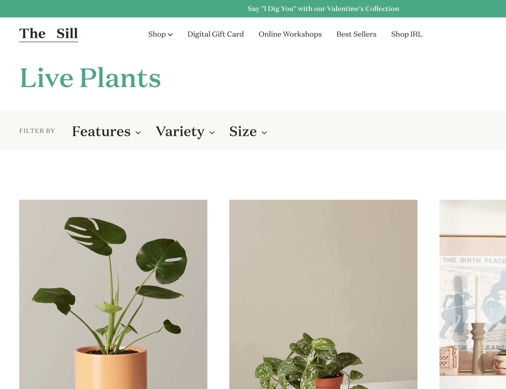

This site is intended to provide beginner plant enthusiasts with a list of good starter plants as well as sun, water, pest, and fertilizer tips.
I choose The Sill plant shop website as a model. I want to set up my home page in a similar way to their 'live plants' page. I like how the pictures are arranged with just their title, and once clicked on it takes you to a seperate page with the details, information and more photos. The way the pictures are organized on the page looks clean and is easy to navigate, I also like the size of the images. On the details page, I like how it is a single scroll including the bio and other information, this is where I would put care requirements, tips and tricks. I also like the idea of having a 'learn more' button, but mine would link to an outside source.
The home page will include a logo or title and will have a grid of photos of the 5 plants I recommend. There will also be a drop down menu to navigate to the individual plant pages and the 'about' page
This page will include a brief description or explanation of the site and the sites goals.
This will be the first plants page. I will include an image of the plant at the top and then the plants bio in the first paragraph. The second paragraph will be care and requirments. The third paragraph will be tips about pest control, fertilizer and propgation.
Plant #2 Page. Image at top. First paragraph is the plants bio. Second paragraph will be tips and tricks
Plant #3 Page. Image at top. First paragraph is the bio. Second paragraoh is tips and tricks.
Plant #4 Page. Image at top. First paragraph is the bio. Second paragraph is tips and tricks.
Last Plant Page. Image at top. First paragraph is the bio. Second paragraph is tips and tricks.
The target audience for my website would be people interested in plants that have little knowledge or experience with them. People visitng my site will be looking for easy, beginner house plants and all their care requirements. This site will be a starting place for people wanting to fully dive in to house plants or a resource for people just wanting one or two plants to brighten a room. People looking to give a plant as a gift may visit my site. People trouble-shooting common plant disease, pests or other problems may visit my site.